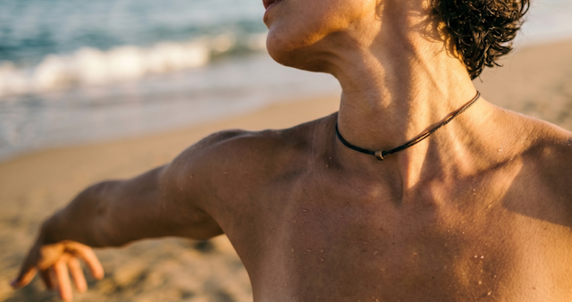

Testo - 3 voci, 2 corpi
Il concetto del doppio non è mai una semplice duplicazione geometrica, ma una lacerazione necessaria, l'unico espediente attraverso cui la coscienza può guardarsi in faccia. Esistere come unità monolitica significa restare ciechi a se stessi; è solo attraverso la scissione — la nascita di un contrappeso interiore — che il sé abbandona la stasi ed entra nella dinamica del movimento. Nel testo della performance, questo sdoppiamento smette di essere un'astrazione filosofica e si fa carne, sangue e movimento. La psiche si divide per abitare il mondo, proiettando sul palco due forze apparentemente estranee ma biologicamente e poeticamente sintonizzate: Anima, che lavora sulla stasi, sul silenzio e sul peso trattenuto nel diaframma; e Nemesi, che si nutre di furia, accelerazione e rottura.
In Demian (1919), Hermann Hesse scrive una delle più potenti definizioni del processo di individuazione:
«L'uccello si sforza di uscire dal guscio. Il guscio è il mondo. Chi vuole rinascere deve distruggere un mondo.»
Nel testo drammaturgico, Nemesi incarna esattamente questa forza distruttrice: è l'impulso che brucia i ponti, che vive nella "furia bastarda" e che distrugge il paesaggio per urgenza di autoconservazione. Ma l'intuizione più profonda di Hesse, che si riflette nel legame tra Emil Sinclair e Max Demian, è che l'evoluzione spirituale non consiste nel trionfo del "bene" sul "male", bensì nel superamento di questo dualismo morale. Hesse introduce la figura della divinità gnostica Abraxas, il dio che unisce in sé il divino e il demoniaco, la luce e l'ombra.
Anima e Nemesi iniziano il loro percorso come "Estranee", isolate nei rispettivi approcci protettivi — la dissociazione e la paralisi per l'una, la reattività cieca e la corazza per l'altra. Non sanno ancora di essere le due metà di Abraxas. Il testo si muove oltre il dualismo cartesiano proprio perché non condanna la furia di Nemesi né celebra la purezza immobile di Anima: entrambe sono "la stessa ferita, curata in due modi opposti". L'integrazione avviene quando il sé smette di combattere la propria parte oscura e la riconosce come la spinta necessaria per fecondare la stasi.
Se Hesse fornisce la mappa filosofica, Marracash — esplicitamente citato nella genesi del testo con il brano "Anima" — offre la metrica e l'estetica della frammentazione. Nella traccia Body Parts, che apre l'album Persona, il rapper milanese compie un'operazione brutalmente onesta: seziona il proprio corpo e la propria mente, assegnando a ogni brano un organo o una funzione vitale, esorcizzando lo sdoppiamento tra l'uomo Fabio e l'artista Marracash.
Nel brano "Anima", Marracash canta proprio il peso di una sensibilità che schiaccia, il contrasto tra l'esposizione pubblica e il vuoto interno, l'incapacità di trovare un centro se non attraverso lo scontro violento con i propri demoni.
Il testo della performance eredita questa attitudine da "barre a ispirazione": la parola diventa un'arma ritmica, un flusso serrato e martellante dove il disagio mentale si traduce immediatamente in dolore somatico — lo spillo nella mascella, la contrazione della corazza, la crepa nello sterno. Come in Marracash, l'uso della metrica rap serve a dare un perimetro al caos: le 64 barre dei quadri centrali sono lo spazio rigido in cui il doppio esce dai pori per essere finalmente nominato, spogliato della vergogna e addomesticato.
L'atto finale, accompagnato dal loop ideale di Children di Robert Miles, sancisce la fine del dualismo atroce. Non c'è una "guarigione" intesa come cancellazione del passato, ma c'è l'accettazione del carico. Il sé guarisce nell'istante in cui comprende che l'ombra non era un nemico venuto da fuori, ma la strada stessa; il passo di Anima insegna a Nemesi dove andare, e la furia di Nemesi dà ad Anima la forza di esistere e ballare. La carne, finalmente, trova la sua voce unificata.
Riferimento bibliografico — Hermann Hesse, Demian (1919). Riferimento musicale — "Anima e Nemesi", Marracash.
Mi ricordo l'inizio, fu amore subito
un battito, una scossa elettrica
Volevo vite mai vissute
Le prime volte, il biglietto, l'aeroporto, la fuga
Sentirsi vive solo quando il destino ti asciuga.
Due ospiti
Una sta ferma nel vuoto, l'altra corre nel vento.
La mia scissione in due
Una che cerca casa, l'altra che brucia le vie.
Le ho tenute chiuse nella valigia
Aspettando che il tempo mi mostrasse quando aprirle.
Attaccata all'ignoto, un'erranza durata una vita
Prendere voli, tornare, ripartire, ritornare
Ogni viaggio diventa solo una fuga, questi paesaggi li ho visti solo di notte
Vederli sparire nella mia mente è il vuoto profondo
di chi ha cercato un appiglio ai confini del mondo.
Mi nutro per scappare, per negare la mia condizione.
Non è tempo di restare, il silenzio è una sfida
Per avere di più, dovevo andare via
E questo è l'addio a chi ero, al mio doppio, al mio viso.
Dimmi perché resto ferma se tutto si muove, trattengo l'aria e non sento le prove.
Il silenzio è un rifugio, l'unica mia cella, ho spento le luci prima di capire la stella.
La tristezza non urla, si siede e non parla, c'è una lama nel petto e non riesco a levarla.
Mi hanno detto "sii buona" e ho azzerato le pretese, dimmi perché combatto se continuo a pagarne le spese.
Della furia la scia, del crollo solo il fumo, il doppio che uccido ogni sera è il mio consumo.
Della corsa resta il fiato, l'asfalto sotto le piante, del ponte bruciato la fiamma sul palmo, bruciante.
Sono schiava di un tempo che accelera e stringe, una gabbia senza sbarre e un'ombra che dipinge.
Il dolore somatico è un tarlo che non si cancella, la rabbia era un'arma, mo è uno spillo nella mascella.
Fisso un punto nel vuoto e la vista si spegne, la mente impara a non rispondere alle insegne.
C'è un nucleo profondo che non grida ma aspetta l'impatto, dimmi cosa aspetta questo mio corpo astratto.
Del movimento resta lo scatto, della mente il rumore, serro i denti nel buio per non sentire il dolore.
Della vecchia corazza è rimasta la forma contratta, ho chiamato forza la corsa, la mia fuga astratta.
Impugno lo stimolo prima di capire dove cado, è già tardi, ho una furia bastarda che mi brucia gli sguardi.
Il mio istinto è in guerra per l'autoconservazione, Nemesi non sa dove finisce la pelle e inizia la percezione.
Sento una presenza che pulsa nel lato cieco del petto, cambio cammino, cambio strada, non guardo, non accetto.
Non do un nome a quello che sento, evito la connessione, porto tutto dentro come una valigia in costrizione.
Non so cosa c'è sotto il diaframma, so solo che pesa, dimmi perché non la apro, perché ho paura della mia resa.
Dimmi perché temo il respiro che spinge da sotto, mentre il mio equilibrio è già quasi interrotto.
Dell'altra sento solo il calore e il peso nell'aria, non mi giro, non guardo, ho roba da bruciare, sono un'avanguardia.
Del riconoscimento resta una crepa nello sterno, del nome che non dico resta il vuoto interno.
Ma ogni tanto la macchina si arresta, una tregua improvvisa che non corre nella testa.
Non le do un nome, distruggo la quiete con il rumore, resto sola a scaricare la tensione nel mio core.
Siamo qui. Estranee. Nello stesso sistema, nello stesso buio.
Nessuna delle due sa ancora che l'altra... è la strada, è il futuro.
Ho sempre corso, anche quando sembravo ferma nel tempo,
ogni passo un colpo sordo, un peso che porto dentro.
Una ferita senza nome, un marchio inciso sul petto,
la rabbia mi ha cresciuta, mi ha dato il passo eretto.
Mi ha tenuta in piedi quando il mondo era solo cenere,
ho imparato a non cadere.
Ma adesso la verità mi guarda in faccia,
la rabbia ha il mio profilo.
Dimmi perché ho chiamato "forza" quello che era paura,
una corazza di spine per la mia pelle pura.
Dimmi perché ho costruito muri e li ho chiamati casa,
prigioni di cemento per un'anima mai riposa.
Perché ho corso verso tutto senza sapere da cosa scappavo,
inseguendo un fantasma nel vuoto che professavo.
Ho distrutto il paesaggio prima di capire il disegno,
ho bruciato il mio regno per un attimo di impegno.
Il doppio mi assomiglia, parla la mia lingua morta,
batte forte alla mia porta.
Mi ha salvata dal nulla, mi ha distrutta nel tragitto,
spesso insieme, spesso l'una l'altro conflitto.
Non era un nemico venuto da un altro mondo lontano,
era la parte che non ho saputo tenere per mano.
Anni di "sei troppo", anni di giudizio serrato,
anni di "calmati", un ordine mai accettato.
Anni di rabbia muta, senza dove metterla al mondo,
anni di furia che si mangiava nel suo fondo.
Anni di colpa pesante, anni di vergogna vestita,
anni di vuoto assoluto, anni di angoscia infinita.
Anni di rottura netta, anni di silenzio forzato,
anni di urla trattenute, un incendio mai domato.
Anni di maschere chiare, anni di denti stretti,
anni di corpi tesi, anni di nervi mai eletti.
Anni di "dopo" costante, anni di "mai" definitivo,
anni di te che non eri te, in questo labirinto visivo.
Anni di me che non ero me, solo un'ombra di passaggio,
anni di paura travestita da un falso coraggio.
Anni di dolore vestito da una corsa senza fine,
anni di fame e di sete, tra le mie stesse spine.
Anni di tutto, tranne quello che serviva davvero,
anni di simulazione, in questo mondo austero.
Anni di "basta" sussurrato, quasi un soffio nel vento,
anni di "basta" mai urlato, nel mio rigido tormento.
Anni di catene che sembravano scelte di vita,
anni di inferni che chiamavo casa, ferita su ferita.
E ora basta, il tempo della menzogna è scaduto,
il sibilo della furia è finalmente caduto.
Il doppio esce dai pori, nel movimento più vero,
violento come l'uragano, limpido come il mistero.
Bella, impura, viva, finalmente la mia natura,
con il fiato corto e il cuore pieno di questa tortura.
Con la pelle che sa di vulcano, di terra bruciata,
l'identità che rinasce dalla cenere già data.
Il doppio è il mio specchio, il mio inizio e la mia fine,
ora sono pronta a danzare tra le mie stesse rovine.

Mi muovo come se l'aria fosse di vetro,
ogni mio slancio mi trascina un po' indietro.
Non c'è dinamica, non c'è traccia di scatto,
sono un peso sospeso, un riflesso astratto.
Mi sento un'eclissi di carne, un'ombra sbiadita,
la spettatrice immobile della mia stessa vita.
Mi guardo le mani e ne ignoro il perimetro,
misuro il mio vuoto con un freddo micrometro.
Non è sofferenza, è un'asfissia di senso,
una nebbia densa nel mio spazio immenso.
Ho imparato a sparire pur restando presente,
un'identità muta, un'identità assente.
Sono diventata un'esperta nel non occupare spazio,
un'anima in prestito che non paga il suo dazio.
Sono il sedimento che resta quando il fuoco si spegne,
il ritratto sfuocato delle mie stesse insegne.
Sono la polvere che scende quando tutto si placa,
Mi sono abituata al silenzio, al vuoto che mi ha cresciuta,
ho chiamato "quiete" la tomba di una parte perduta.
Mi ero persa a ogni costo, cercavo l'esilio lontano,
volevo storie estranee, un segno di un'altra mano.
Cercavo un corpo che non fosse il mio, una forma straniera,
un nome che non fosse il mio, in questa eterna preghiera.
Ma poi, d'un tratto, la stasi. Il tempo si è arreso,
davanti alla natura selvaggia, il mio spirito è sceso.
Paesaggi senza quadranti, bellezza che incute paura,
una quiete profonda, una lama nella mia frattura.
Torino è il tatuaggio sul braccio, memoria di pietra,
Vercelli mi accoglie nel ventre, la luce si arretra.
Ricordo quel corpo, quel gesto, il ballerino lontano,
sabbia nera, oceano blu, un disegno sovrano.
La guerra con me stessa, finalmente cambia il suo aspetto,
si spoglia dell'odio, si placa nel centro del petto.
Nel mondo che ignora le ore, in questo spazio infinito,
la libertà è un battito puro, un sentiero pulito.
Ascolto il mio cuore pulsare, non cerco più il filtro,
non correggo il ritmo, non cerco più il mio filtro.
Ascolto le lacrime scendere, lascio che i sorrisi si posino,
come foglie d'autunno, i miei tormenti si riposino.
Dear N... you died so I could live and dance,
è la morte di un vecchio fantasma, rompo la mia trance.
Porto tutto con me, la valigia è una soglia aperta,
non so cosa contenga, ma è la mia meta scoperta.
Non so tutto il peso, non so ogni singola piega,
ma accetto il carico, è la vita che qui mi lega.
Ogni vestito bagnato, ogni ombra, ogni mio fallimento,
sono i tessuti che compongono il mio monumento.
Sono pronta a quel passo diverso, a quella danza nuova,
un movimento che non cerca risposte, che non fa la prova.
Da sola, nel centro del vuoto, apro le braccia al destino,
sorrido alla fine del buio, al mio nuovo mattino.
Il vento mi abbraccia, si insinua tra i pori, le vene,
scioglie le catene invisibili, le vecchie catene.
Non sono più quella che resta a guardare la fine,
sono il movimento che esplode oltre le mie spine.
Anima finalmente libera, Anima fatta di luce,
il corpo riprende il dominio, il caos si riduce.
Non c'è più la scissione, non c'è più il dualismo atroce,
c'è solo la carne che canta, che trova la sua voce.
Ho cercato nel mondo, ma ho trovato solo me stessa,
in ogni paesaggio, in ogni memoria impressa.
La valigia è leggera ora, il peso è diventato spinta,
non sono più una preda, non sono più vinta.
Ogni passo è un ritorno, ogni sguardo è una scoperta,
la porta che era chiusa, adesso è spalancata, offerta.
Sento il respiro di chi ero, di chi sarò domani,
sento la vita scorrere calda tra le mie mani.
Non c'è più il timore dell'abisso, né della quiete,
ho bevuto abbastanza, ho saziato le mie sete.
Che strano vedervi, senza scudi, senza le vostre difese,
respirare vicine, nel tempo che finalmente si arrese.
Vi guardo e mi specchio in un volto che avevo smarrito,
un frammento di luce in un labirinto infinito.
Non cerco l'esilio, non voglio più liberarmi di voi,
siete il motore e la stasi di tutto ciò che siamo noi.
Una che correva forte se l'altra restava ferma,
una che cercava vie, l'altra che faceva da conferma.
Mentre una stava ferma, a contare le ombre nel muro,
l'altra bruciava i ponti, cercando un approdo sicuro.
Anima taceva nell'urlo che Nemesi scatenava,
la calma nel centro del caos che la carne creava.
Siete la stessa ferita, curata in due modi opposti,
due strade diverse, in mezzo a mille sentieri rimasti.
Il mio corpo è sapiente, capisce ben prima del mio pensiero,
è il primo a sentire il rilascio di questo mistero.
Prendo fiato, lo lascio andare, mi sciolgo nel vuoto,
per la prima volta non resisto, non cerco un ignoto.
Non corro più verso il nulla, non fuggo lontano,
stringo la vostra presenza, vi tengo ferme per mano.
Non eravate l'ostacolo, il muro, la fine del gioco,
eravate la mia strada, l'unico e solo fuoco.
Tutta quella distanza, quel mare che vi ha separate,
era il tempo che mancava alle rotte che avete tracciato.
Abbiamo la polvere nei polmoni, il peso degli anni,
cenere sulle mani, residui di antichi affanni.
Ma il passo adesso è uno solo, la danza è un unisono denso,
adesso è il vostro respiro che dà al mio mondo il suo senso.
Dimmi perché ho impiegato una vita per questo incrocio,
perché ho temuto il riflesso di ogni singolo approccio?
Perché avevo paura di vedervi nel vetro oscurato?
Forse perché accettarvi era il mio segreto svelato.
Riconoscervi significa guardare nel mio profondo,
accettare che in voi due io trovo il centro del mondo.
Eravate la stessa sostanza, fin dal principio dei giorni,
intrecciate nel mio fato, tra i silenzi e i ritorni.
Quante vite ho attraversato, in cerca di pace,
quante volte vi ho mancate, con la mia mente fugace.
Non importa il passato, l'errore, la colpa, l'assenza,
siamo qui all'incrocio, nel culmine della presenza.
Questa notte non vi cambia, non vi rende diverse,
questa notte vi trova, tra le rotte che avevate disperse.
Non c'è un paradiso promesso, nessuna vittoria finale,
c'è solo il corpo che resta, nel suo moto ideale.
Il corpo che impara, che cade, che danza e che sale,
che riconosce il confine tra il bene e il male.
C'è la mano di una che sa quanto peso l'altra porta,
che sostiene il suo passo, che spalanca la porta.
Il passo di Anima insegna a Nemesi la direzione sognata,
e la forza di Nemesi rende Anima una terra nata.
Sorelle per strada, anime in un unico corpo danzante,
non perfette, non guarite del tutto, in questo istante.
Ma insieme, nel buio che accende le nostre scintille,
insieme, tra le ombre, tra le nostre mille pupille.
E questo mi basta, il contatto che rompe il gelo,
il respiro che sale, che unisce la terra e il cielo.
Finalmente insieme, la scissione è soltanto un ricordo,
un vecchio racconto, un pezzo di un vecchio accordo.
La danza riprende, non cerca più fuga o riparo,
è un atto d'amore, un gesto che non è amaro.
Siamo intere, siamo vive, siamo il moto che resta,
in questa stanza vuota che diventa una festa.
La ferita è chiusa, la danza è la nostra memoria,
Sorelle per sempre, in questa, la nostra storia.
Le parole in grassetto nel testo originale corrispondono a stimoli neurofisiologici precisi: corpo, carne, movimento, gesto — attivano la corteccia premotoria e il sistema dei neuroni specchio (Gallese, Lakoff, 2005). Il cervello simula l'azione descritta prima che il corpo la compia.
Battito, respiro, sangue, pori, vene — stimolano la consapevolezza interocettiva e agiscono sul sistema nervoso autonomo attraverso il nervo vago (Berthoz, 1997; Damasio, 1994).
Dualismo, scissione — nominano il problema cartesiano che la performance risolve nel corpo. Merleau-Ponty: il corpo vissuto (Leib) non è un oggetto tra gli oggetti — è la nostra maniera di abitare il mondo.
Berthoz, A. (1997). Il senso del movimento.
Damasio, A. (1994). L'errore di Cartesio.
Gallese, V., Lakoff, G. (2005). The brain's concepts. Cognitive Neuropsychology.
Merleau-Ponty, M. (1945). Fenomenologia della percezione.
Hesse, H. (1919). Demian.